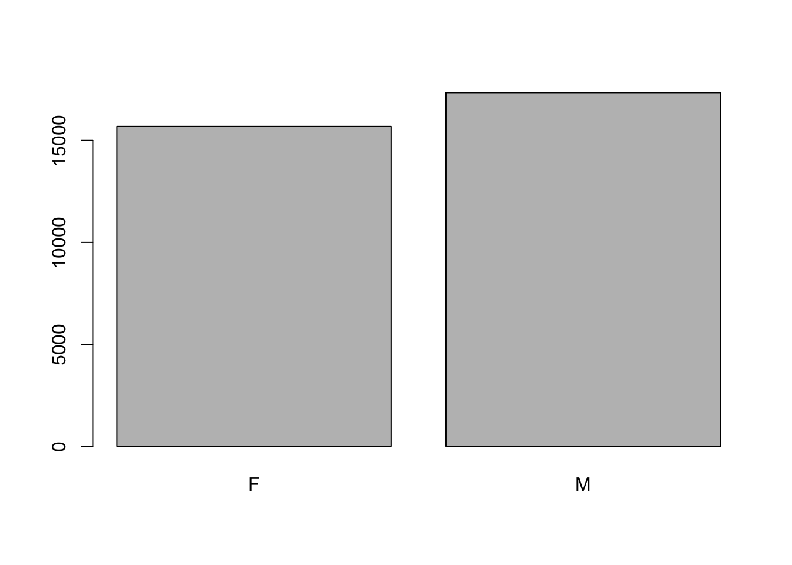
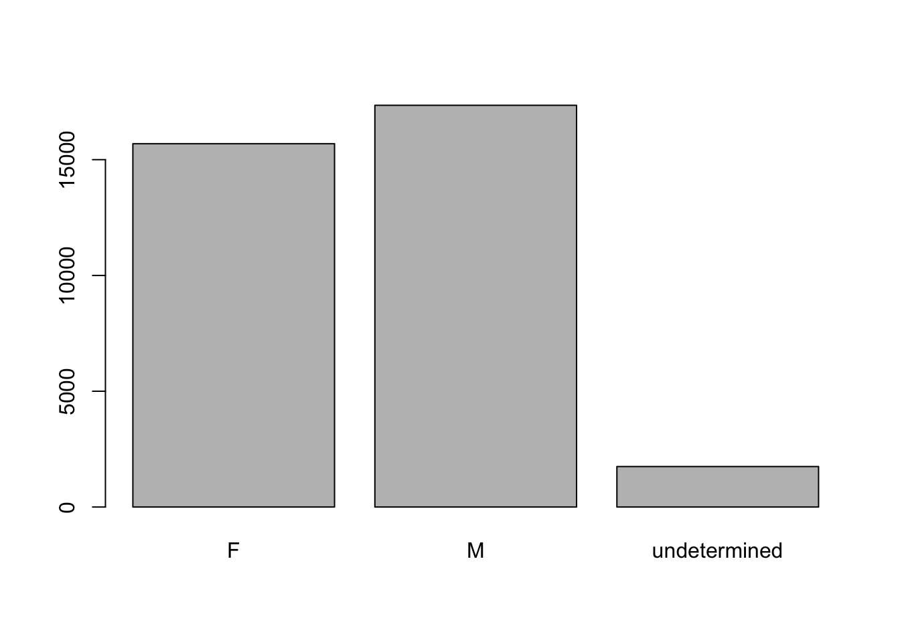

download.file(url = "https://ndownloader.figshare.com/files/2292169",
destfile = "~/data-carpentry/data_raw/portal_data_joined.csv")Starting with data
In this lesson we begin to work with data. We start by loading data from a file into a dataframe, then begin to work with the dataframe.
Loading survey data
Today we’ll work with animal species data, stored as comma-separated values (CSV) in a .csv file in the following format:
| Column | Description |
|---|---|
| record_id | Unique id for the observation |
| month | month of observation |
| day | day of observation |
| year | year of observation |
| plot_id | ID of a particular experimental plot of land |
| species_id | 2-letter code |
| sex | sex of animal (“M”, “F”) |
| hindfoot_length | length of the hindfoot in mm |
| weight | weight of the animal in grams |
| genus | genus of animal |
| species | species of animal |
| taxon | e.g. Rodent, Reptile, Bird, Rabbit |
| plot_type | type of plot |
Downloading the data
We first need to download the data using the download.file() function.
Checking the documentation with ?download.file(), we see that the function takes two important options
url– a character string naming the URL of a resource to be downloadeddestfile– a character string with the file path where the file will be saved
We’re going to save this to our data_raw directory that we created last session.
Reading the data into R
Now we can load the data from the computer into an object in R. We’ll do this with the read_csv() function from the tidyverse package.
Base R function and packages
Until now we’ve used base R functions that are built into R. Packages provide acccess to additional functions beyond those that come with R.
Here we use functions from the package tidyverse.
First, let’s install tidyverse (if you haven’t already).
install.packages("tidyverse")Let’s load the tidyverse package.
library(tidyverse)── Attaching packages ─────────────────────────────────────── tidyverse 1.3.2 ──
✔ ggplot2 3.4.0 ✔ purrr 0.3.5
✔ tibble 3.1.8 ✔ dplyr 1.0.10
✔ tidyr 1.2.1 ✔ stringr 1.4.1
✔ readr 2.1.3 ✔ forcats 0.5.2
── Conflicts ────────────────────────────────────────── tidyverse_conflicts() ──
✖ dplyr::filter() masks stats::filter()
✖ dplyr::lag() masks stats::lag()Now we can read the data from the file into a dataframe object, surveys.
surveys <- read_csv("~/data-carpentry/data_raw/portal_data_joined.csv")Rows: 34786 Columns: 13
── Column specification ────────────────────────────────────────────────────────
Delimiter: ","
chr (6): species_id, sex, genus, species, taxa, plot_type
dbl (7): record_id, month, day, year, plot_id, hindfoot_length, weight
ℹ Use `spec()` to retrieve the full column specification for this data.
ℹ Specify the column types or set `show_col_types = FALSE` to quiet this message.Notice the data types are set for each column of surveys, even though we didn’t set them. This is because read_csv will look at the first 1000 rows of each column and guess the data type.
Note
read_csv() assumes that fields are delineated by commas. However, this may not always be the case. There are several other functions to read in data in a tabular format. The most generalizable function would be read_delim() which allows for the specification of column / field delimiters.
Let’s view the contents of the first 6 rows of survey by using the head() function.
head(surveys)# A tibble: 6 × 13
record_id month day year plot_id speci…¹ sex hindf…² weight genus species
<dbl> <dbl> <dbl> <dbl> <dbl> <chr> <chr> <dbl> <dbl> <chr> <chr>
1 1 7 16 1977 2 NL M 32 NA Neot… albigu…
2 72 8 19 1977 2 NL M 31 NA Neot… albigu…
3 224 9 13 1977 2 NL <NA> NA NA Neot… albigu…
4 266 10 16 1977 2 NL <NA> NA NA Neot… albigu…
5 349 11 12 1977 2 NL <NA> NA NA Neot… albigu…
6 363 11 12 1977 2 NL <NA> NA NA Neot… albigu…
# … with 2 more variables: taxa <chr>, plot_type <chr>, and abbreviated
# variable names ¹species_id, ²hindfoot_lengthWe can change the number of rows we view by passing the option n to the function.
head(surveys, n=7)# A tibble: 7 × 13
record_id month day year plot_id speci…¹ sex hindf…² weight genus species
<dbl> <dbl> <dbl> <dbl> <dbl> <chr> <chr> <dbl> <dbl> <chr> <chr>
1 1 7 16 1977 2 NL M 32 NA Neot… albigu…
2 72 8 19 1977 2 NL M 31 NA Neot… albigu…
3 224 9 13 1977 2 NL <NA> NA NA Neot… albigu…
4 266 10 16 1977 2 NL <NA> NA NA Neot… albigu…
5 349 11 12 1977 2 NL <NA> NA NA Neot… albigu…
6 363 11 12 1977 2 NL <NA> NA NA Neot… albigu…
7 435 12 10 1977 2 NL <NA> NA NA Neot… albigu…
# … with 2 more variables: taxa <chr>, plot_type <chr>, and abbreviated
# variable names ¹species_id, ²hindfoot_lengthNow let’s look at the last 7 lines using tail(), which works in a similar fashion.
tail(surveys, n=7)# A tibble: 7 × 13
record_id month day year plot_id speci…¹ sex hindf…² weight genus species
<dbl> <dbl> <dbl> <dbl> <dbl> <chr> <chr> <dbl> <dbl> <chr> <chr>
1 26557 7 29 1997 7 PL F 20 22 Pero… leucop…
2 26787 9 27 1997 7 PL F 21 16 Pero… leucop…
3 26966 10 25 1997 7 PL M 20 16 Pero… leucop…
4 27185 11 22 1997 7 PL F 21 22 Pero… leucop…
5 27792 5 2 1998 7 PL F 20 8 Pero… leucop…
6 28806 11 21 1998 7 PX <NA> NA NA Chae… sp.
7 30986 7 1 2000 7 PX <NA> NA NA Chae… sp.
# … with 2 more variables: taxa <chr>, plot_type <chr>, and abbreviated
# variable names ¹species_id, ²hindfoot_lengthFor a more complete view of surveys we can use the view() command.
view(surveys)
Note
There are two functions for viewing which are case-sensitive. Using view() with a lowercase ‘v’ is part of tidyverse, whereas using View() with an uppercase ‘V’ is loaded through base R in the utils package.
What are dataframes?
Dataframes are a VERY common data structure for tabular data.
- columns are vectors of the same length
- each column must contain a single data type (characters, integers, etc.)
An example of this is shown in the figure below.

We can also see this when inspecting the structure of the dataframe using the function str().
str(surveys)spc_tbl_ [34,786 × 13] (S3: spec_tbl_df/tbl_df/tbl/data.frame)
$ record_id : num [1:34786] 1 72 224 266 349 363 435 506 588 661 ...
$ month : num [1:34786] 7 8 9 10 11 11 12 1 2 3 ...
$ day : num [1:34786] 16 19 13 16 12 12 10 8 18 11 ...
$ year : num [1:34786] 1977 1977 1977 1977 1977 ...
$ plot_id : num [1:34786] 2 2 2 2 2 2 2 2 2 2 ...
$ species_id : chr [1:34786] "NL" "NL" "NL" "NL" ...
$ sex : chr [1:34786] "M" "M" NA NA ...
$ hindfoot_length: num [1:34786] 32 31 NA NA NA NA NA NA NA NA ...
$ weight : num [1:34786] NA NA NA NA NA NA NA NA 218 NA ...
$ genus : chr [1:34786] "Neotoma" "Neotoma" "Neotoma" "Neotoma" ...
$ species : chr [1:34786] "albigula" "albigula" "albigula" "albigula" ...
$ taxa : chr [1:34786] "Rodent" "Rodent" "Rodent" "Rodent" ...
$ plot_type : chr [1:34786] "Control" "Control" "Control" "Control" ...
- attr(*, "spec")=
.. cols(
.. record_id = col_double(),
.. month = col_double(),
.. day = col_double(),
.. year = col_double(),
.. plot_id = col_double(),
.. species_id = col_character(),
.. sex = col_character(),
.. hindfoot_length = col_double(),
.. weight = col_double(),
.. genus = col_character(),
.. species = col_character(),
.. taxa = col_character(),
.. plot_type = col_character()
.. )
- attr(*, "problems")=<externalptr>
Note
When we loaded the data into R, it got stored as an object of class tibble, which is a special kind of data frame (the difference is not important for our purposes, but you can learn more about tibbles here).
Inspecting dataframes
There are several functions that can be useful in checking content, structure, and other characteristics fo the dataframe. Here is a incomplete list.
| Characteristic | Function | Descritption |
|---|---|---|
| Size | dim(suverys) |
returns a vector with the number of rows in the first element, and the number of columns as the second element (the dimensions of the object) |
nrow(surveys) |
returns the number of rows | |
ncol(surveys) |
returns the number of columns | |
| Content | head(surveys) |
shows the first n rows, 6 by default |
tail(surveys) |
shows the last n rows, 6 by default | |
| Names | names(surveys) |
returns the column names (synonym of colnames() for data.frame objects) |
rownames(surveys) |
returns the row names | |
| Summary | str(surveys) |
structure of the object and information about the class, length and content of each column |
summary(surveys) |
summary statistics for each column |
Take some time to try these out by copy/pasting these into your console.
Challenge
Q&A: Based on the output of str(surveys), can you answer the following questions?
- What is the class of the object
surveys? - How many rows and how many columns are in this object?
Indexing and subsetting dataframes
Dataframes are 2 dimensional data types. The location of each item in a dataframe can be described by the indices of these two dimensions (row and column indices) – where row number comes first, followed by column number.
Important
Different ways of specifying these coordinates lead to results with different classes.
Extracting specific values
dataframe[row_index, column_index]
First row, first column
surveys[1,1]# A tibble: 1 × 1
record_id
<dbl>
1 1First row, sixth column
surveys[1,6]# A tibble: 1 × 1
species_id
<chr>
1 NL Extracting entire rows or columns
datarame[row_index, ] – specific row, all columns
datarame[, col_index] – all rows, specific column
First row, all columns
surveys[1, ]# A tibble: 1 × 13
record_id month day year plot_id speci…¹ sex hindf…² weight genus species
<dbl> <dbl> <dbl> <dbl> <dbl> <chr> <chr> <dbl> <dbl> <chr> <chr>
1 1 7 16 1977 2 NL M 32 NA Neot… albigu…
# … with 2 more variables: taxa <chr>, plot_type <chr>, and abbreviated
# variable names ¹species_id, ²hindfoot_lengthAll rows, first column
surveys[, 1]# A tibble: 34,786 × 1
record_id
<dbl>
1 1
2 72
3 224
4 266
5 349
6 363
7 435
8 506
9 588
10 661
# … with 34,776 more rowsAnother way to get a specific column, all rows. Note, there is no comma used.
surveys[1]# A tibble: 34,786 × 1
record_id
<dbl>
1 1
2 72
3 224
4 266
5 349
6 363
7 435
8 506
9 588
10 661
# … with 34,776 more rowsMultiple rows or columns – use vectors to specify indices
data_frame[c(row_index, row_index, rowindex), c(column_index, column_index)]
The first three rows of the fifth and sixth columns
surveys[c(1, 2, 3), c(5, 6)]# A tibble: 3 × 2
plot_id species_id
<dbl> <chr>
1 2 NL
2 2 NL
3 2 NL Another way, use the : to select a range of indces
surveys[1:3, 5:6]# A tibble: 3 × 2
plot_id species_id
<dbl> <chr>
1 2 NL
2 2 NL
3 2 NL Returning vectors – use [[]]
As we’ve seen thus far when working with tibbles, subsetting with [] returns a dataframe.
If we want vectors returned we can use [[]]
The first column as a vector
surveys[[1]]The first value in our dataframe.
surveys[[1,1]][1] 1Excluding indices – use -
All rows, all but the first column
surveys[, -1]# A tibble: 34,786 × 12
month day year plot_id species_id sex hindf…¹ weight genus species taxa
<dbl> <dbl> <dbl> <dbl> <chr> <chr> <dbl> <dbl> <chr> <chr> <chr>
1 7 16 1977 2 NL M 32 NA Neot… albigu… Rode…
2 8 19 1977 2 NL M 31 NA Neot… albigu… Rode…
3 9 13 1977 2 NL <NA> NA NA Neot… albigu… Rode…
4 10 16 1977 2 NL <NA> NA NA Neot… albigu… Rode…
5 11 12 1977 2 NL <NA> NA NA Neot… albigu… Rode…
6 11 12 1977 2 NL <NA> NA NA Neot… albigu… Rode…
7 12 10 1977 2 NL <NA> NA NA Neot… albigu… Rode…
8 1 8 1978 2 NL <NA> NA NA Neot… albigu… Rode…
9 2 18 1978 2 NL M NA 218 Neot… albigu… Rode…
10 3 11 1978 2 NL <NA> NA NA Neot… albigu… Rode…
# … with 34,776 more rows, 1 more variable: plot_type <chr>, and abbreviated
# variable name ¹hindfoot_lengthThe equivalent of head (first 6 rows, all columns – or all but the 7th through max row number).
surveys[-(7:nrow(surveys)), ]# A tibble: 6 × 13
record_id month day year plot_id speci…¹ sex hindf…² weight genus species
<dbl> <dbl> <dbl> <dbl> <dbl> <chr> <chr> <dbl> <dbl> <chr> <chr>
1 1 7 16 1977 2 NL M 32 NA Neot… albigu…
2 72 8 19 1977 2 NL M 31 NA Neot… albigu…
3 224 9 13 1977 2 NL <NA> NA NA Neot… albigu…
4 266 10 16 1977 2 NL <NA> NA NA Neot… albigu…
5 349 11 12 1977 2 NL <NA> NA NA Neot… albigu…
6 363 11 12 1977 2 NL <NA> NA NA Neot… albigu…
# … with 2 more variables: taxa <chr>, plot_type <chr>, and abbreviated
# variable names ¹species_id, ²hindfoot_lengthCalling column names directly
Dataframes can also be subet by calling the names of the columns directly.
Using column names to return dataframes.
surveys["species_id"]
surveys[, "species_id"]Using column names to return vectors.
surveys[["species_id"]]We can also use the $ operator to call column names instead of [[]].
surveys$species_idChallenge
Q&A: Write code that does the following:
- Create a dataframe (
surveys_200) containing only the data in row 200 of thesurveysdataset. - Notice how
nrow()gave you the number of rows in a dataframe?
- Use that number to pull out just the last row of the
surveysdataset. - Compare that with the output of using
tail()to make sure it meets expectations. - Pull out the last row using
nrow()instead of the row number. - Create a new dataframe (
surveys_last) from that last row.
Use
nrow()to extract the row that is in the middle of the dataframe. Store the content of this row in an object namedsurveys_middle.Combine
nrow()with the-notation above to reproduce the behavior ofhead(surveys), keeping just the first through sixth of thesurveysdataset.
Factors
Using str(surveys) showed us that several of the columns consist of categorical data, meaning there are a limited number of values (categories). This is contrast to some of the other columns that have a large range of possible number values.
Factor – a special class for working with categorical data
- Once created, factors can only contain a pre-defined set of values, know as
levels - Stored as integers associated with labels
- Can be ordered or unordered
- Are treated as integer vectors
We can convert columns to the factor data type using the factor() function.
surveys$sex <- factor(surveys$sex)Let’s check the conversion with summary().
summary(surveys$sex) F M NA's
15690 17348 1748 By default, R always sorts levels in alphabetical order. For instance, if you have a factor with 2 levels, like below.
sex <- factor(c("male", "female", "female", "male"))R will assign
1to the level"female"2to the level"male"
You can see this by using the function levels().
levels(sex)[1] "female" "male" You can find the number of level using nlevels()
nlevels(sex)[1] 2Sometimes, the order of the factors does not matter, other times you might want to specify the order because it is meaningful (e.g., “low”, “medium”, “high”), it improves your visualization, or it is required by a particular type of analysis.
Here, one way to reorder our levels in the sex vector would be:
sex # current order[1] male female female male
Levels: female malesex <- factor(sex, levels = c("male", "female"))
sex # after re-ordering[1] male female female male
Levels: male femaleWhile factors are represented by integers (1, 2, 3), they are more informative because they are self-describing: "female", "male" is more descriptive than 1, 2.
Factors have this information built in, which is helpful when there are many levels (like the species names in our example dataset).
Challenge
Q&A: What code would you write to do the following?
- Change the columns
taxaandgenusin thesurveysdataframe into a factor. - Using the functions you learned before, can you find out…
- How many rabbits were observed?
- How many different genera are in the
genuscolumn?
Converting Factors
To convert a factor to a character vector, you can use the as.character() function.
as.character(sex)[1] "male" "female" "female" "male" While factors are an efficient way to represent data (because each unique character value is represented once), there may be times when you want to convert factors to numeric vectors, for example, performing simple mathematical operations.
For this, you cannot use as.numeric(), since this will just return the index values of the factor, not the levels. To avoid this, we conver factors –> characters –> numbers.
Another method is to use the levels() function.
Here’s an example.
year_fct <- factor(c(1990, 1983, 1977, 1998, 1990))
as.numeric(year_fct) # Wrong! And there is no warning...[1] 3 2 1 4 3as.numeric(as.character(year_fct)) # Works...[1] 1990 1983 1977 1998 1990as.numeric(levels(year_fct))[year_fct] # The recommended way.[1] 1990 1983 1977 1998 1990Let’s break down the levels() approach.
There are 3 steps that occur:
- We obtain all the factor levels using
levels(year_fct) - We convert these levels to numeric values using
as.numeric(levels(year_fct)) - We access these numeric values using the underlying integers of the vector
year_fctinside the square brackets.
Renaming factors
When your data are stored as factors, you can use the plot() function to get a quick glance at the number of observations represented by each factor level.
Let’s look at the number of males and females captured over the course of the experiment.
## bar plot of the number of females and males captured during the experiment
plot(surveys$sex)
In the plot above, we’re missing the individuals for which sex information was not recorded. To show them in the plot we can convert the missing values into a factor level with addNA(). We’ll need to also give the factor a label.
Note: We are going to make a copy of the sex column so that we are not modigying the working copy of the dataframe.
sex <- surveys$sex #create a copy
levels(sex) #look at the levels[1] "F" "M"sex <- addNA(sex) #addNA as a level
levels(sex) #check the levels again[1] "F" "M" NA head(sex) #look at the data[1] M M <NA> <NA> <NA> <NA>
Levels: F M <NA>levels(sex)[3] <- "undetermined" #assign the value "undetermined" to the third, by index, level
levels(sex) #check the levels again[1] "F" "M" "undetermined"head(sex) #look at the dataset again[1] M M undetermined undetermined undetermined
[6] undetermined
Levels: F M undeterminedNow we can plot the data again, using plot(sex).
plot(sex)
Challenge
Q&A: Write the code to do the following:
- Rename “F” and “M” to “female” and “male” respectively.
- Now that we have renamed the factor level to “undetermined”, can you create the bar plot such that “undetermined” is first (before “female”)?
Q&A: We have seen how dataframes are created when using read_csv(), but they can also be created by hand with the data.frame() function. There are a few mistakes in this hand-crafted data.frame. Can you spot and fix them? Don’t hesitate to experiment!
animal_data <- data.frame(
animal = c(dog, cat, sea cucumber, sea urchin),
feel = c("furry", "squishy", "spiny"),
weight = c(45, 8 1.1, 0.8)
)Q&A: Can you predict the class for each of the columns in the following example?
- Are they what you expected? Why? Why not?
- What would you need to change to ensure that each column had the accurate data type?
country_climate <- data.frame(
country = c("Canada", "Panama", "South Africa", "Australia"),
climate = c("cold", "hot", "temperate", "hot/temperate"),
temperature = c(10, 30, 18, "15"),
northern_hemisphere = c(TRUE, TRUE, FALSE, "FALSE"),
has_kangaroo = c(FALSE, FALSE, FALSE, 1)
)The automatic conversion of data type is sometimes a blessing, sometimes an annoyance.
Be aware that it exists, learn the rules, and double check that data you import in R are of the correct type within your data frame. If not, use it to your advantage to detect mistakes that might have been introduced during data entry (for instance, a letter in a column that should only contain numbers).
Formatting dates
A common challenge for R users is converting date and time information into an analysis-suitable format.
One way to start date information is to store each component (day, month, year) in a separate column. We can see thatsurveys takes this approach.
str(surveys)spc_tbl_ [34,786 × 13] (S3: spec_tbl_df/tbl_df/tbl/data.frame)
$ record_id : num [1:34786] 1 72 224 266 349 363 435 506 588 661 ...
$ month : num [1:34786] 7 8 9 10 11 11 12 1 2 3 ...
$ day : num [1:34786] 16 19 13 16 12 12 10 8 18 11 ...
$ year : num [1:34786] 1977 1977 1977 1977 1977 ...
$ plot_id : num [1:34786] 2 2 2 2 2 2 2 2 2 2 ...
$ species_id : chr [1:34786] "NL" "NL" "NL" "NL" ...
$ sex : Factor w/ 2 levels "F","M": 2 2 NA NA NA NA NA NA 2 NA ...
$ hindfoot_length: num [1:34786] 32 31 NA NA NA NA NA NA NA NA ...
$ weight : num [1:34786] NA NA NA NA NA NA NA NA 218 NA ...
$ genus : Factor w/ 26 levels "Ammodramus","Ammospermophilus",..: 13 13 13 13 13 13 13 13 13 13 ...
$ species : chr [1:34786] "albigula" "albigula" "albigula" "albigula" ...
$ taxa : Factor w/ 4 levels "Bird","Rabbit",..: 4 4 4 4 4 4 4 4 4 4 ...
$ plot_type : chr [1:34786] "Control" "Control" "Control" "Control" ...
- attr(*, "spec")=
.. cols(
.. record_id = col_double(),
.. month = col_double(),
.. day = col_double(),
.. year = col_double(),
.. plot_id = col_double(),
.. species_id = col_character(),
.. sex = col_character(),
.. hindfoot_length = col_double(),
.. weight = col_double(),
.. genus = col_character(),
.. species = col_character(),
.. taxa = col_character(),
.. plot_type = col_character()
.. )
- attr(*, "problems")=<externalptr> We’ll use the ymd() function from the lubridate packages (installed with tidyverse).
Load the package.
library(lubridate)Loading required package: timechange
Attaching package: 'lubridate'The following objects are masked from 'package:base':
date, intersect, setdiff, unionLet’s create a data object and inspect the structure.
my_date <- ymd("2015-01-01")
str(my_date) Date[1:1], format: "2015-01-01"Now let’s paste the year, month, and day separately - we get the same result.
# sep indicates the character to use to separate each component
my_date <- ymd(paste("2015", "1", "1", sep = "-"))
str(my_date) Date[1:1], format: "2015-01-01"Now we apply this function to the surveys dataset. Create a character vector from the year, month, and day columns of surveys using paste()
head(paste(surveys$year, surveys$month, surveys$day, sep = "-"))[1] "1977-7-16" "1977-8-19" "1977-9-13" "1977-10-16" "1977-11-12"
[6] "1977-11-12"This character vector can be used as the argument for ymd():
head(ymd(paste(surveys$year, surveys$month, surveys$day, sep = "-")))Warning: 129 failed to parse.[1] "1977-07-16" "1977-08-19" "1977-09-13" "1977-10-16" "1977-11-12"
[6] "1977-11-12"There is a warning telling us that some dates could not be parsed (understood) by the ymd() function. For these dates, the function has returned NA, which means they are treated as missing values – we will deal with this problem later.
First we add the resulting Date vector to the surveys dataframe as a new column called date.
surveys$date <- ymd(paste(surveys$year, surveys$month, surveys$day, sep = "-"))Warning: 129 failed to parse.str(surveys) # notice the new column, with 'date' as the classspc_tbl_ [34,786 × 14] (S3: spec_tbl_df/tbl_df/tbl/data.frame)
$ record_id : num [1:34786] 1 72 224 266 349 363 435 506 588 661 ...
$ month : num [1:34786] 7 8 9 10 11 11 12 1 2 3 ...
$ day : num [1:34786] 16 19 13 16 12 12 10 8 18 11 ...
$ year : num [1:34786] 1977 1977 1977 1977 1977 ...
$ plot_id : num [1:34786] 2 2 2 2 2 2 2 2 2 2 ...
$ species_id : chr [1:34786] "NL" "NL" "NL" "NL" ...
$ sex : Factor w/ 2 levels "F","M": 2 2 NA NA NA NA NA NA 2 NA ...
$ hindfoot_length: num [1:34786] 32 31 NA NA NA NA NA NA NA NA ...
$ weight : num [1:34786] NA NA NA NA NA NA NA NA 218 NA ...
$ genus : Factor w/ 26 levels "Ammodramus","Ammospermophilus",..: 13 13 13 13 13 13 13 13 13 13 ...
$ species : chr [1:34786] "albigula" "albigula" "albigula" "albigula" ...
$ taxa : Factor w/ 4 levels "Bird","Rabbit",..: 4 4 4 4 4 4 4 4 4 4 ...
$ plot_type : chr [1:34786] "Control" "Control" "Control" "Control" ...
$ date : Date[1:34786], format: "1977-07-16" "1977-08-19" ...
- attr(*, "spec")=
.. cols(
.. record_id = col_double(),
.. month = col_double(),
.. day = col_double(),
.. year = col_double(),
.. plot_id = col_double(),
.. species_id = col_character(),
.. sex = col_character(),
.. hindfoot_length = col_double(),
.. weight = col_double(),
.. genus = col_character(),
.. species = col_character(),
.. taxa = col_character(),
.. plot_type = col_character()
.. )
- attr(*, "problems")=<externalptr> Let’s make sure everything worked correctly. One way to inspect the new column is to use summary().
summary(surveys$date) Min. 1st Qu. Median Mean 3rd Qu. Max.
"1977-07-16" "1984-03-12" "1990-07-22" "1990-12-15" "1997-07-29" "2002-12-31"
NA's
"129" So why were some dates not parsed?
We can use the functions we saw previously to deal with missing data to identify the rows in our data frame that are failing.
If we combine them with what we learned about subsetting data frames earlier, we can extract the columns “year,”month”, “day” from the records that have NA in our new column date. We will also use head() so we don’t clutter the output.
missing_dates <- surveys[is.na(surveys$date), c("year", "month", "day")]
head(missing_dates)# A tibble: 6 × 3
year month day
<dbl> <dbl> <dbl>
1 2000 9 31
2 2000 4 31
3 2000 4 31
4 2000 4 31
5 2000 4 31
6 2000 9 31Looking at the dates that were not converted, it seems that they don’t actualy exist – September and April only have 30 days, not 31 days as it is specified in our dataset.
There are several ways you could deal with situation:
- If you have access to the raw data (e.g., field sheets) or supporting information (e.g., field trip reports/logs), check them and ensure the electronic database matches the information in the original data source.
- If you are able to contact the person responsible for collecting the data, you could refer to them and ask for clarification.
- You could also check the rest of the dataset for clues about the correct value for the erroneous dates.
- If your project has guidelines on how to correct this sort of errors, refer to them and apply any recommendations.
- If it is not possible to ascertain the correct value for these observations, you may want to leave them as missing data.
Regardless of the option you choose, it is important that you document the error and the corrections (if any) that you apply to your data.
Citations
- Data Analysis and Visualization in R for Ecologists. https://datacarpentry.org/R-ecology-lesson/index.html